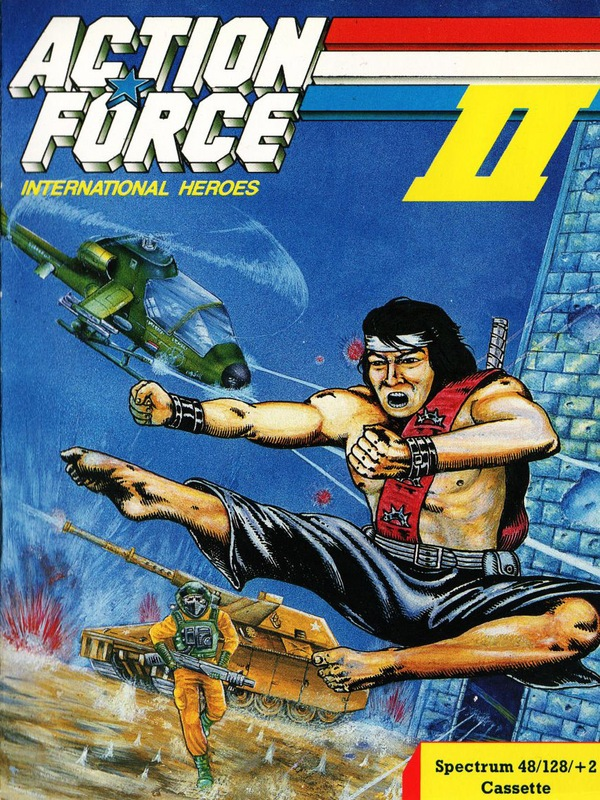
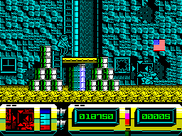
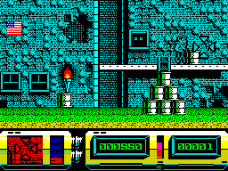
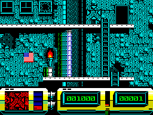
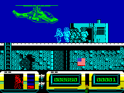

Action Force II


{kind=link}

| Publisher: | Virgin Games |
| Price: | £7.95 Cassette, 14.95 Disk |
| Year: | 1988 |
| Source: | CRASH, Issue 52 |

The city is in a state of tension. Terrorists, backed by the evil organisation COBRA, have taken a number of innocent citizens hostage and are hiding them on the roofs of a series of derelict downtown buildings. Two members of the Action Force team are assigned to the mission. Their task: to penetrate enemy territory, locate the hostages and rendezvous with the chopper acting as air support. Quick Kick, expert in unarmed combat, attempts to scale the walls of each hideout, while Airtight (the player), provides protective cover fire.

The game is divided into several levels each of which comprises an empty apartment block. Advancing through a landscape of shattered windows, deserted fences and graveyards of abandoned oil drums, Quick Kick makes his way slowly up a network of rickety fire escapes. Disembodied eyes peer from the windows — their owners ready to drop lethal bombs; commando-style terrorists people the splintered doorways, and innocuous looking bins invariably contain highly trained and heavily armed fighters. Careful positioning of his superimposed target allows Airtight to shoot them before they attack.

mission
As Quick Kick climbs each building he loses energy. Shooting the Stars and Stripes visible on the walls of some screens boosts his health. Should energy drop to zero, one of three lives is lost. A status panel shows energy remaining, current level and score as well as a magnified view of the target area.
Following the successful completion of the first level,Airtight can choose between three powerful weapons: machine gun, bazooka or bio gun. Each of these have slightly different properties: the bazooka fires more slowly than the machine gun but has a more devastating effect, while the bio gun quickly and efficiently reduces its victims to skeletal remains. However complex the weapon, however, the ultimate fate of Quick Kick and the hostages depends on the accurate coordination of Airtight’s eyes and hand.
CRITICISM

“Action Force II is a definite improvement over its predecessor (35%, Issue 46). Not only is the presentation very polished, but the gameplay is equally smooth. The colourful graphics are detailed and effectively animated, particularly the eyes peering warily from the windows and bins as they cautiously case the joint. The action itself is highly addictive and entertaining. The target is realistically difficult to place and constantly needs a steadying hand; you have to control the gun, not just position it. The need to replenish energy as well as eliminate the enemy calls for some fast manipulation of the joystick. The whole process is made tense by the fact that the target moves more slowly than the terrorists; movements from one end of the screen to the other — although quite swift — seem agonisingly slow. Success therefore depends on careful planning, delicate control and a modicum of luck. The fact that it looks much easier than it actually is to complete makes it all the more compelling. Highly recommended.”
KATI
“Comparing this to the original Action Force game is like comparing gold to the stuff you find at the bottom of all the mugs in CRASH Towers! This is absolutely fantastic. The graphics and the sound are excellent and colour is used extremely well in the game — and the loading screen (eight colours to a character square isn’t bad!). Action Force II has the novel idea of swapping the role you play: instead of directing the main character that appears on-screen, you play yourself and have to cover your compatriot with a wide selection of guns. Some of the larger targets in the game such as the choppers, tanks and prison cells are all full of detail and do take some bashing! When you miss a baddie and he kills your little friend you have to start that level all over again, which does get a bit tedious. But whichever level you’re on there’s plenty to do, like electrocuting the hit-men and blowing up the dustbins! Action Force II is a brilliant action-packed game — buy it today.”
NICK

“This is a tremendous improvement over Action Force. The graphics — the main drawing point of the game — are incredibly detailed and coloured, bringing back memories of Dan Dare (also by Virgin Games). It’s good to see the programmers using the Spectrum well — all aspects are exploited to their full. Even the game perspective is a bit different from most — you don’t go out looking for trouble, it finds you. The game features many interesting enemies, from maniac dust bins to irate building inhabitants who throw weights out of the windows. It’s bound to be a great game for high scoring arcade players, although I doubt the addictiveness will last as long among the rest of us.”
PAUL
COMMENTS
| Joystick: | Cursor, Kempston, Sinclair |
| Graphics: | Superb. Every screen is packed with detail, and colour! The animation of all the characters — especially the deadly dustbin men — is smooth and realistic |
| Sound: | Although there’s no title tune the spot effects are original and atmospheric |
| General rating: | The ultimate in protection games. Great graphics and a mound of playability — the only thing it lacks is definable keys |
| Presentation: | 90% |
| Graphics: | 92% |
| Playability: | 89% |
| Addictive qualities: | 89% |
| Overall: | 90% |